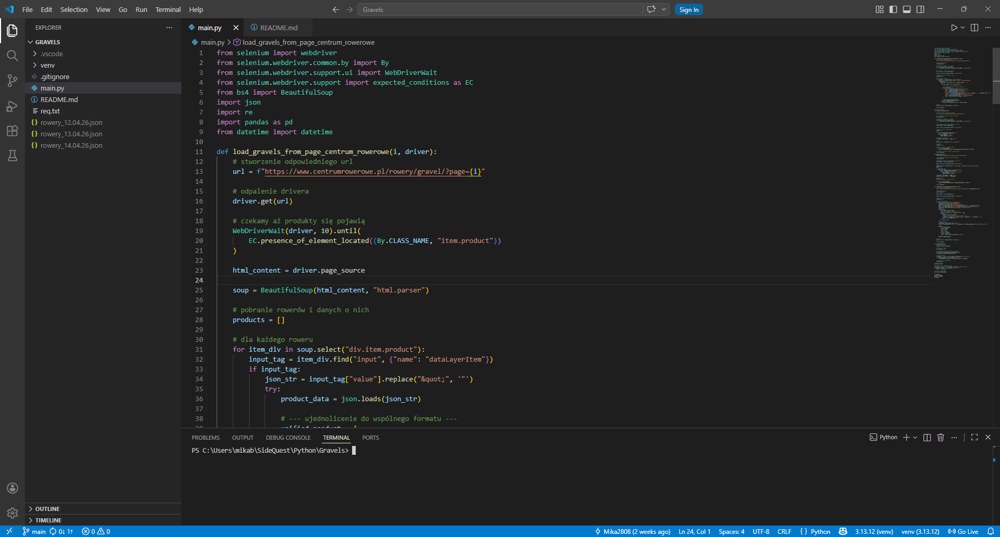
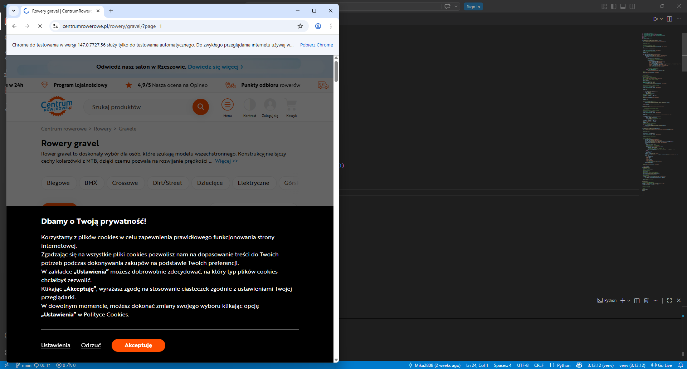
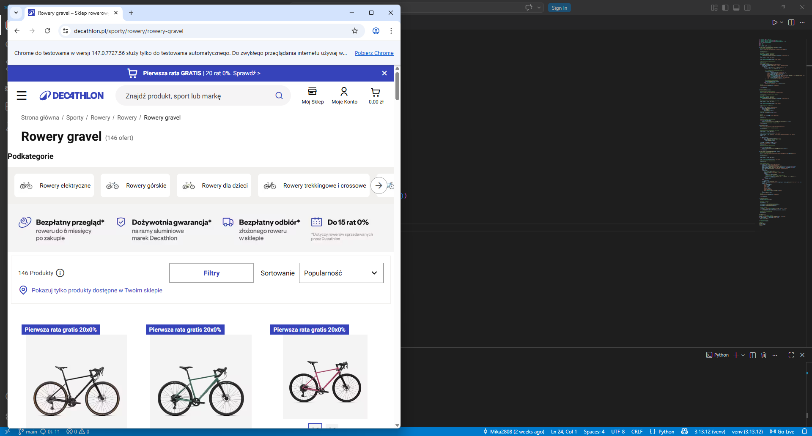

Gravel Scraper
A Python-based web scraping application designed to automatically collect gravel bike listings from multiple online stores, unify the data into a consistent format, and enable easy comparison of prices, specifications, and ratings using structured JSON output.
Background
The project was created out of a personal need to quickly compare gravel bike models available across different online stores without manually browsing multiple websites. The goal was to automate the data collection process and build a unified dataset that enables fast and efficient comparison of available offers.
The application uses web scraping techniques to extract product data from two major online bike retailers: Centrum Rowerowe and Decathlon. The system automatically navigates through paginated listings, collects product details such as name, brand, price, rating, and URL, and stores the results in a structured JSON format for further analysis using pandas.
Currently, I am scraping data daily to collect a representative dataset for further analysis. I assume that a time period of 30–60 days of data collection will be sufficient.
Technologies: Python, Selenium, BeautifulSoup, Pandas, JSON
Image Gallery

Main.py file
Web driver scraping from Centrum rowerowe
Web driver scraping from Decathlon Folder with data in JSON files
Folder with data in JSON files